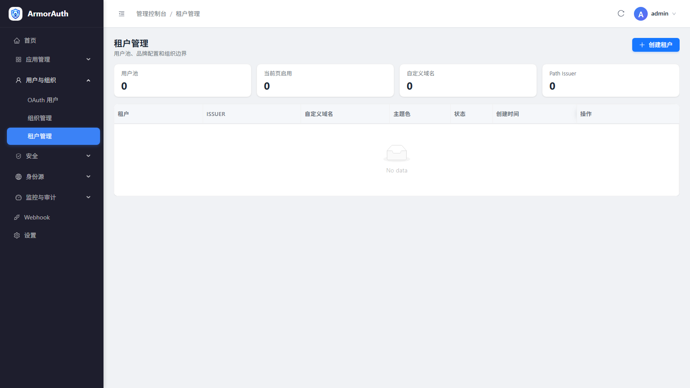
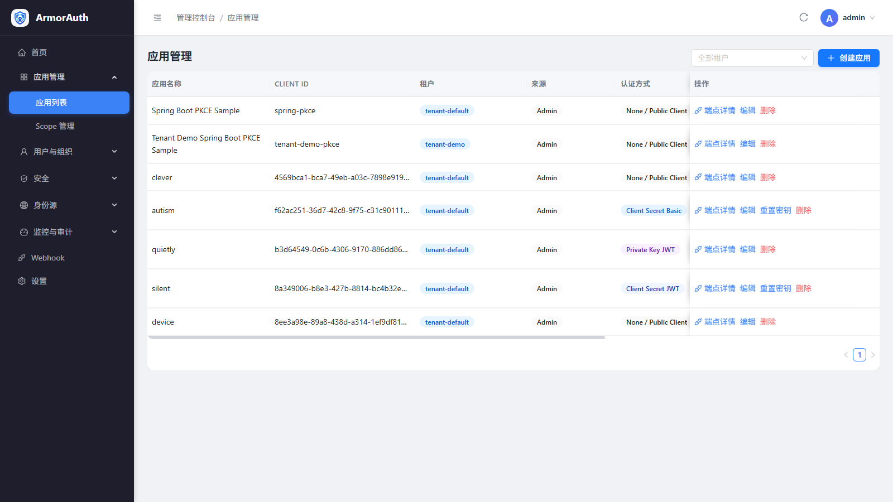
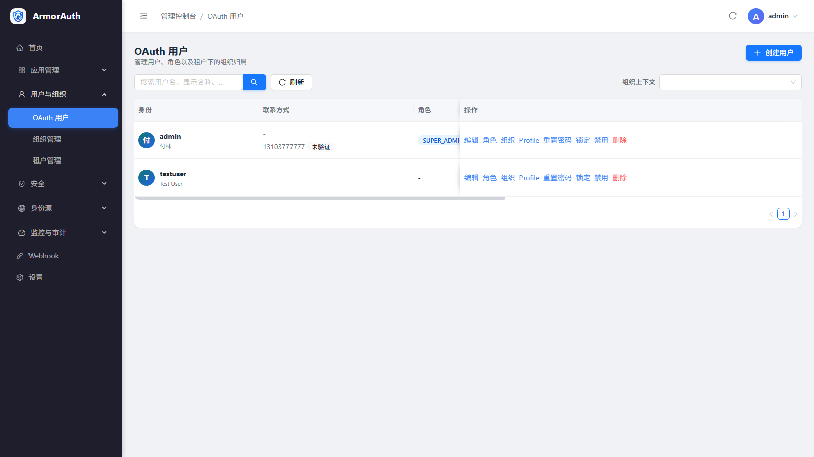

Operator guide
功能操作手册
面向管理员和平台工程团队，梳理 ArmorAuth 从租户建模、应用接入、用户管理到安全运营的常用操作路径。
租户与组织
租户用于归集应用、用户、组织和租户感知路径。组织用于承载部门、业务单元或客户侧层级。
操作建议
- 先创建稳定的租户编码，避免后续 issuer 或 `/t/{tenantCode}` 路径变化。
- 只在组织会影响授权、报表或运营边界时创建层级组织。
- 把组织成员角色和全局角色分开维护，避免高权限账号扩散。

租户管理：租户编码、域名、路径 issuer 和启停状态。点击图片可放大查看。
应用接入
应用代表 OAuth2/OIDC Client。创建应用时需要选择租户、授权类型、认证方式、Scope、回调地址和安全策略。
配置顺序
- 浏览器和移动端优先使用 Authorization Code + PKCE。
- 服务间调用使用 Client Credentials，并限制最小 Scope。
- 敏感应用开启应用级 MFA，并在端点详情里复制 discovery、token、JWKS 等 URL。

应用列表：Client ID、租户、认证方式、授权类型、DPoP、MFA。点击图片可放大查看。
用户与联系方式
本地用户可以手动创建，也可以通过 SCIM 或联合登录进入系统。邮箱和手机号建议先验证，再用于登录、找回或 MFA。
联系方式验证
- 维护用户名、显示名称、手机号和邮箱等基础身份信息。
- 验证邮箱/手机号后再让它们参与账号恢复或一次性验证码登录。
- 需要保留审计历史时，优先禁用用户而不是删除用户。

OAuth 用户：联系方式验证状态、角色和租户归属。点击图片可放大查看。
MFA 与账号安全
ArmorAuth 同时支持平台策略和用户自助账号安全。管理员可以在应用、角色或登录策略层面要求 MFA；
用户登录后可以在账号中心绑定 Authenticator app、Passkey 或维护联系方式。
TOTP Authenticator
Passkey / WebAuthn
短信验证码
恢复码流程
会话查看
- 管理员账号和高风险应用应优先开启 MFA。
- 强制 MFA 前需要准备恢复流程，避免用户因设备丢失无法登录。
- 审计登录失败和 MFA 失败事件，识别异常登录行为。
身份源与联合登录
身份源支持 OAuth2/OIDC、SAML、LDAP/AD 以及内置社交和企业 Provider。启用身份源前，应先完成元数据、密钥、
属性映射和绑定策略配置。
- OAuth2/OIDC Provider 需要 issuer、authorization、token、userinfo、JWK 和 Scope。
- SAML Provider 需要元数据、ACS、证书和 NameID/属性映射。
- LDAP/AD 需要 bind 凭据、搜索 base、过滤器、组映射和 TLS 策略。
- 外部账号绑定不应自动删除本地用户，解绑和重绑要保留审计轨迹。
审计、Webhook 与运维
生产环境需要持续关注登录、Token、配置变更、身份源、Webhook 和密钥状态。高风险变更应关联操作人、时间和工单。
AUDIT
审计日志
查看管理操作、登录失败、策略变更和身份源变更。
HOOK
Webhook
对外投递账号、应用和安全事件，接收方必须校验签名。
KEY
JWK 与 Secret
备份 JWK 表和加密 key，轮换时保留旧 key 到迁移完成。
{kind=link}
{kind=link}
{kind=link}